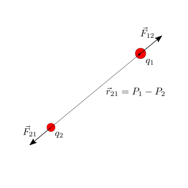
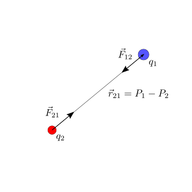
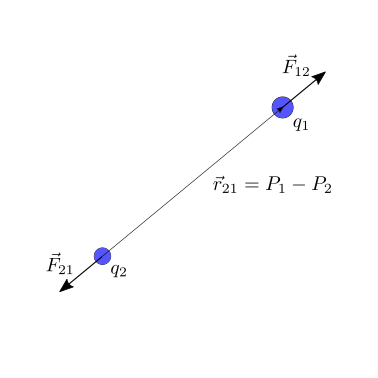

19.1. Elettrostatica#
19.1.1. Legge di Coulomb#
Date due cariche elettriche puntiformi \(q_1\), \(q_2\), nella posizione \(P_1\), \(P_2\) nello spazio, la forza
essendo \(\vec{r}_{21}\) il vettore che congiunge il punto \(P_2\) con il punto \(P_{1}\), \(\vec{r}_{21} = \vec{r}_1 - \vec{r}_2\).
 |
 |
 |
La scelta della definizione della costante di proporzionalità, \(k = \frac{1}{4 \pi \varepsilon}\), viene fatta per ottenere un’espressione della legge di Gauss per il campo elettrico senza fattori numerici.
La costante \(\varepsilon\) viene definita costante dielettrica del mezzo. Per cariche elettriche posizionate nello spazio «vuoto» (di materia ma non di proprietà fisiche), nell’espressione della legge di Coulomb compare la costante dielettrica nel vuoto,
Materiali isotropi lineari non dispersivi possono essere caratterizzati da una sola costante, la costante dielettrica del materiale. Questa caratteristica del materiale viene di solito definita come multiplo della costante dielettrica del vuoto, tramite la costante dielettrica relativa \(\varepsilon_r\),
Vale il principio di sovrapposizione delle cause e degli effetti. In presenza di 3 cariche puntiformi, \(q_1\), \(q_2\), \(q_3\), la forza totale agente sulla carica \(q_1\) è uguale alla somma delle forze dovute a \(q_2\) e \(q_3\),
19.1.1.1. Misura della carica elettrica#
Un elettrometro è uno strumento di misura della carica elettrica. Una versione rudimentale di un elettrometro è la bilancia di torsione usata da Coulomb nei suoi esperimenti.
Il momento generato dalla forza di Coulomb sulla carica elettrica incognita \(q_1\) dalla carica elettrica \(q_2\) equilibria il momento elastico della bilancia di torsione. Se la struttura ha una equazione costitutiva il momento strutturale è proproporzionale alla rotazione, \(M_z = K \, \theta\).
todo svolgere conti qui o rimandare a esercizi?
19.1.2. Il campo elettrico#
Data una distribuzione di cariche nello spazio, è possibile descriverla tramite l’effetto che avrebbe su una carica qualsiasi posta in un punto arbitrario dello spazio, introducendo la definizione di campo elettrico.
Viene data qui una definizione operativa del campo elettrico. Data una distribuzione di cariche, \(q_i\), nei punti dello spazio \(P_i\), si prende una carica test - di prova - di intensità nota \(q^{test}\), che può essere posizionata in ogni punto \(P\) dello spazio. E” inoltre possibile misurare la forza \(\vec{F}(P; q^{test})\) agente sulla carica di prova dovuta all’interazione con la distribuzione di cariche in esame,
Poichè la forza sulla carica di prova è proporzionale alla sua carica elettrica, è possibile descrivere l’effetto della distribuzione nota di cariche nello spazio con la funzione \(\vec{e}(P; \, q_i, \, P_i)\). Questa funzione viene definita campo elettrico della distribuzione delle cariche.
Viceversa, noto il campo elettrico di una distribuzione di cariche, la forza agente su una carica elettrica \(q\) posta nel punto \(P\) dello spazio è
todo Poichè il PSCE vale per la forza, il PSCE vale per il campo elettrico
19.1.2.1. Campo conservativo#
Come mostrato (todo ah sì? fare riferimenti qui?) per il campo gravitazionale, anche il campo elettrostatico è un campo conservativo.
Il lavoro fatto dal campo su una carica che descrive una traiettoria \(\gamma\), con estremi \(A\), \(B\) è uguale a
avendo definito l”energia potenziale \(U(P)\) del sistema di cariche che produce il campo elettrico \(\vec{e}(P)\) e il potenziale elettrico \(V(P)\) come l’energia potenziale per unità di carica \(q\). Sia l’energia potenziale sia il potenziale sono definiti a meno di una costante additiva.
Il potenziale generato da una carica \(q_i\) posizionata punto «potenziante» \(P_i\) nel punto «potenziato» \(P\)
con \(\vec{r}_i = P - P_i\). Poichè il PSCE vale per la forza e il campo elettrico, il PSCE vale per il potenziale, e quindi il potenziale elettrico generato da un sistema di cariche è la somma del potenziale elettrico generato dalle singole cariche,
19.1.2.2. Energia potenziale di una distribuzione di cariche#
L’energia potenziale di un sistema di cariche è uguale al lavoro (delle forze esterne = - lavoro forza elettrica) fatto per costruire tale distribuzione. Poiché in meccanica classica l’energia è definita a meno di una costante additiva arbitraria, si può considerare la condizione di riferimento con le cariche poste all“«infinito» o, meglio, infinitamente distanti una dalle altre.
Per un sistema di cariche puntiformi, l’energia potenziale del sistema è uguale alla somma dell’energia potenziale tra le singole coppie di cariche
senza ripetere la sommatoria sulle coppie con gli elementi invertiti.
Seguono due dimostrazioni di questa formula, ottenute costruendo il sistema di cariche dall’infinito in due maneire diverse.
todo
Posizionando una carica alla volta
Posizionando le cariche contemporanamente
Posizionando tutte le cariche contamporaneamente con una «scalatura» delle distanze, \(\vec{r}_i(\alpha) = \frac{\vec{r}_i}{\alpha}\), \(\alpha \in (0, 1]\), il lavoro delle forze elettriche è
e il lavoro diventa
19.1.3. Campo elettrico nei materiali#
polarizzazione…
Per materiali lineari isotropi,
todo polarizzazione, cariche libere e cariche «vincolate»
19.1.4. Verso le equazioni di Maxwell#
19.1.4.1. Legge di Gauss per il flusso del campo elettrico#
Dimostrazione della legge di Gauss
Dimostrazione per una carica puntiforme e una superficie sferica. Il calcolo diretto del flusso del campo elettrico generato da una carica puntiforme attraverso una superficie sferica di raggio \(r\) centrata nella carica
L’integranda è costante, essendo \(r\) costante sulla superficie sferica, e quindi si riduce al prodotto della funzione integranda per l’estensione del dominio di integrazione, qui la superficie estenra della sfera. Ricordando che la superficie di una superficie sferica di raggio \(r\) è \(S = 4 \pi r^2\), si ottiene l’espressione della legge di Gauss per il campo elettrico di una carica puntiforme attraverso una superficie sferica,
todo obs: andamento del campo come \(r^{-2}\) implica andamento del flusso costante attraverso superfici che sottengono lo stesso angolo solido
todo … altra osservazione che ora non ricordo…
Dimostrazione per una carica puntiforme e per una superficie arbitraria. Usando l’osservazione sull’andamento del campo, e la definizione di angolo solido
Dimostrazione per una distribuzione di carica qualsiasi e superficie arbitraria. Avendo dimostrato la legge di Gauss per una carica puntiforme attraverso una superficie arbitraria, la legge di Gauss per il campo \(\vec{d}\) generato da una distribuzione di carica qualsiasi segue immediatamente, ricordando che vale il PSCE
19.1.4.2. Legge di Faraday, in elettrostatica#
La legge di Faraday in elettrostatica è una diretta conseguenza della conservatività del campo elettrico
\[\Gamma_{\ell}(\vec{e}) = \oint_{\ell} \vec{e} \cdot \hat{t} = 0 \ .\]Questa equazione è valida solo in un regime elettrostatico: la forma generale dell’equazione di Faraday prevede un termine dipendente dal tempo, che è identicamente nullo nel regime elettrostatico.
Dimostrazione della legge di Faraday
Dimostrazione per una carica puntiforme e un percorso circolare. Il calcolo diretto della circuitazione del campo elettrico generato da una carica puntiforme lungo un percorso circolare di raggio \(r\) centrato nella carica
poiché il versore tangente al percorso circolare è ortogonale al campo elettrico, diretto in direzione radiale.
Dimostrazione per una carica puntiforme e un percorso arbitrario.
Dimostrazione per una distribuzione di carica qualsiasi e percorso arbitrario. Avendo dimostrato la legge di Faraday nel caso stazionario per una carica puntiforme lungo un percorso arbitrario, la legge di Faraday in regime stazionario per il \(\vec{e}\) generato da una distribuzione di carica qualsiasi segue immediatamente, ricordando che vale il PSCE
19.1.5. Moto di una carica in un campo elettrico#
Il moto di una corpo puntiforme di massa \(m\) e carica elettrica \(q\) in una regione dello spazio nel quale c’è un campo elettrico \(\vec{e}(\vec{r})\) è soggetto a una forza esterna \(\vec{F}^{el} = q \, \vec{e}(P)\). L’equazione del moto diventa quindi
todo esempi
19.1.6. Condensatore#
19.1.6.1. Condensatore infinito piano#
\(C\) capacità, \(C = \frac{\varepsilon \, A}{\ell}\) capacità per un condensatore piano.
Condensatore cilindrico
todo
Condensatore sferico
Tra le sfere del condensatore, il campo elettrico è ha direzione radiale e valore assoluto \(\propto r^{-2}\),
dove la carica totale della superficie sferica con distribuzione di carica uniforme è data dal prodotto della densità superficiale di carica e la superficie, \(Q = \sigma \, S_1 = \sigma \, 4 \pi \, R_1^2\). La differenza di potenziale tra le due armature è quindi
La formula precedente e la definizione di capacità, $\(Q = C , \Delta V\)$, consente di determinare la capacità di un condensatore sferico ideale,